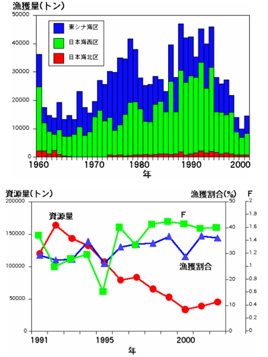

ウルメイワシの漁獲量は1970年代後半と1990年代前半ころに多くなりました。1991年以降の資源量をコホート解析を用いて計算したところ、2000年まで減少傾向でしたが、近年やや持ち直しています。漁獲圧はマイワシほど高くないと判断しています。
ウルメイワシの漁獲量と資源量の推移




ウルメイワシの漁獲量は1970年代後半と1990年代前半ころに多くなりました。1991年以降の資源量をコホート解析を用いて計算したところ、2000年まで減少傾向でしたが、近年やや持ち直しています。漁獲圧はマイワシほど高くないと判断しています。